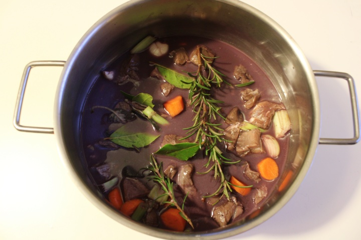

Cinghiale in Umido
Description
There are some recipes that take the mind back in time and among them is wild boar stew.
So different from the modern and almost minimalist preparations to which we are accustomed,
this one does not stop losing its appeal although fewer and fewer people decide to try their hand at this delicacy.
In fact, if the goodness of wild boar stew is unquestionable, the same cannot be said about the speed of its preparation.
The recipe for wild boar stew takes time: first, for the meat to lose its wild flavor (hence the marinating with wine),
and then for the cooking, which is long and slow and indispensable for obtaining soft and succulent meat. In short,
you will have realized that it takes patience but we guarantee that this will be abundantly repaid once brought to the table.
Ready to get to work?
Ingredients
- 1kg of wild boar
- 2 carrot
- 2 celery stalk
- 2 onion
- 1 bunch of aromatic herbs(sage - rosmary - laurel)
- 2 cloves garlic
- 4 black peppercorns
- 750 ml red wine
- 400g tomato pulp
- olive oil (enaugh)
Steps
- First, cut the boar meat into 3-cm chunks and combine them in a large bowl.
Also chop a peeled carrot, celery stalk and onion and add them to the bowl
along with half of the herbs, cloves and peppercorns.
- Cover with red wine, stir and let marinate covered with a clean dishcloth for 8 hours
you can do this in the evening and prepare the recipe the next day. Why Red Wine.
It will help remove the "wild" taste from the meat.

- After the marinating time has elapsed, drain the meat and vegetables by tipping them into a colander.
In a saucepan, brown chopped celery, carrot, onion and garlic with a few tablespoons of oil.
- Then add the shredded meat and herbs, then remove the herbs and deglaze with a glass of red wine.
- Add the tomato pulp and begin cooking. It will take about 4 hours during which you will stir occasionally,
adding hot water if necessary if it gets too dry. In fact, the meat should always be just barely covered
- About halfway through cooking, or at any rate after a couple of hours, adjust the salt.
Only at the end of cooking season with cinnamon and nutmeg.
As soon as the meat is nicely tender, your boar stew is ready to serve.